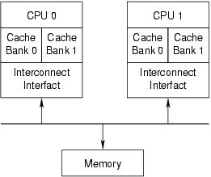
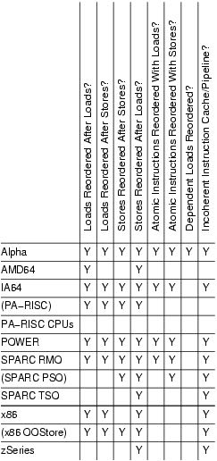

Memory Ordering in Modern Microprocessors
https://www.linuxjournal.com/article/8211 https://www.linuxjournal.com/article/8212
重读了一下这边关于memory ordering的文章，作者是 Paul E. McKenney 据说给Linux Kernel + SMP提交过非常多的代码，所以对这个东西算是执牛耳了。关于memory ordering我之前也看过不少文章，所以这里记录一些自己感兴趣的东西。
什么时候会出现OOS(out-of-order store)呢? 加入每个CPU上存在多个Cache Bank的话，如果W0, W1前后分别写Cache Bank0/1, 但是因为0比较忙而1比较闲的话，那么W1可能会先被CPU1上看到。这个东西在Intel X86上是没有的，X86可以保证写入顺序。

编写Linux Kernel代码的时候几乎是不需要关心这些东西的，因为这些东西都被包装在了一系列同步原语之中。下面Table1里面列举说了多种芯片的内存顺序特性，其中()标记的型号理论上存在但是实际非常少见。前面几个load/store之间组合的顺序，可以看到X86只是保证了store-store顺序；然后是atomic load/store顺序，可以看到x86都是保证顺序的，所以x86上std::atomic relax order估计是没有啥效果的。
The most important differences are called out in Table 1. More detailed descriptions of specific CPUs' features will be addressed in a later installment. Parenthesized CPU names indicate modes that are allowed architecturally but rarely used in practice. The cells marked with a Y indicate weak memory ordering; the more Ys, the more reordering is possible. In general, it is easier to port SMP code from a CPU with many Ys to a CPU with fewer Ys, though your mileage may vary. However, code that uses standard synchronization primitives—spinlocks, semaphores, RCU—should not need explicit memory barriers, because any required barriers already are present in these primitives. Only tricky code that bypasses these synchronization primitives needs barriers. It is important to note that most atomic operations, for example, atomic_inc() and atomic_add(), do not include any memory barriers.

最后两个列比较奇特，一个是存在数据依赖的指令是否会被调整，大部分型号是不会的唯独Alpha, 另外一个就是incoherent instruction cache/pipeline. 我理解如果是incoherent instruction cache/pipeline的话，所以动态修改内存中指令并不会反应到icache上，需要特殊的指令进行刷新。
The second-to-last column, dependent reads reordered, requires some explanation, which will be undertaken in the second installment of this series. The short version is Alpha requires memory barriers for readers as well as for updaters of linked data structures. Yes, this does mean that Alpha in effect can fetch the data pointed to before it fetches the pointer itself—strange but true. Please see the “Ask the Wizard” column on the manufacturer's site, listed in Resources, if you think that I am making this up. The benefit of this extremely weak memory model is Alpha can use simpler cache hardware, which in turn permitted higher clock frequencies in Alpha's heyday.
The last column in Table 1 indicates whether a given CPU has a incoherent instruction cache and pipeline. Such CPUs require that special instructions be executed for self-modifying code. In absence of these instructions, the CPU might execute the old rather than the new version of the code. This might seem unimportant—after all, who writes self-modifying code these days? The answer is that every JIT out there does. Writers of JIT code generators for such CPUs must take special care to flush instruction caches and pipelines before attempting to execute any newly generated code. These CPUs also require that the exec() and page-fault code flush the instruction caches and pipelines before attempting to execute any binaries just read into memory, lest the CPU end up executing the prior contents of the affected pages.
虽然可以直接使用Kernel里面的同步原语，Kernel还是给出一些mb的操作，分为smp_xx和up_xxx. 其中up_xxx主要是为了保证单个processor上不要出现内存乱序？我猜想这里面应该是防止编译器做reorder的吧？不过我记得只要是声明volatile变量，对这些变量读写编译器在这是有barrier的。
Linux provides a carefully chosen set of memory-barrier primitives, as follows:
- smp_mb(): “memory barrier” that orders both loads and stores. This means loads and stores preceding the memory barrier are committed to memory before any loads and stores following the memory barrier.
- smp_rmb(): “read memory barrier” that orders only loads.
- smp_wmb(): “write memory barrier” that orders only stores.
- smp_read_barrier_depends(): forces subsequent operations that depend on prior operations to be ordered. This primitive is a no-op on all platforms except Alpha.
The smp_mb(), smp_rmb() and smp_wmb() primitives also force the compiler to eschew any optimizations that would have the effect of reordering memory optimizations across the barriers. The smp_read_barrier_depends() primitive must do the same, but only on Alpha CPUs.
These primitives generate code only in SMP kernels; however, each also has a UP version—mb(), rmb(), wmb() and read_barrier_depends(), respectively—that generate a memory barrier even in UP kernels. The smp_ versions should be used in most cases. However, these latter primitives are useful when writing drivers, because memory-mapped I/O accesses must remain ordered even in UP kernels. In absence of memory-barrier instructions, both CPUs and compilers happily would rearrange these accesses. At best, this would make the device act strangely; at worst, it would crash your kernel or, in some cases, even damage your hardware.
Alpha
It may seem strange to say much of anything about a CPU whose end of life has been announced, but Alpha is interesting because, with the weakest memory-ordering model, it reorders memory operations the most aggressively. It therefore has defined the Linux kernel memory-ordering primitives that must work on all CPUs. Understanding Alpha, therefore, is surprisingly important to the Linux kernel hacker.
POWER
Many members of the POWER architecture have incoherent instruction caches, so a store to memory is not necessarily reflected in the instruction cache. Thankfully, few people write self-modifying code these days, but JITs do it all the time. Furthermore, recompiling a recently run program looks like self-modifying code from the CPU's viewpoint. The icbi instruction, instruction cache block invalidate, invalidates a specified cache line from the instruction cache and may be used in these situations.
X86
The x86 CPUs provide process ordering so that all CPUs agree on the order of a given CPU's writes to memory, so the smp_wmb() primitive is a no-op for the CPU. However, a compiler directive is required to prevent the compiler from performing optimizations that would result in reordering across the smp_wmb() primitive.
On the other hand, x86 CPUs give no ordering guarantees for loads, so the smp_mb() and smp_rmb() primitives expand to lock;addl. This atomic instruction acts as a barrier to both loads and stores. Some SSE instructions are ordered weakly; for example, clflush and nontemporal move instructions. CPUs that have SSE can use mfence for smp_mb(), lfence for smp_rmb() and sfence for smp_wmb(). A few versions of the x86 CPU have a mode bit that enables out-of-order stores, and for these CPUs, smp_wmb() also must be defined to be lock;addl.
Although many older x86 implementations accommodated self-modifying code without the need for any special instructions, newer revisions of the x86 architecture no longer require x86 CPUs to be so accommodating. Interestingly enough, this relaxation comes just in time to inconvenience JIT implementors.